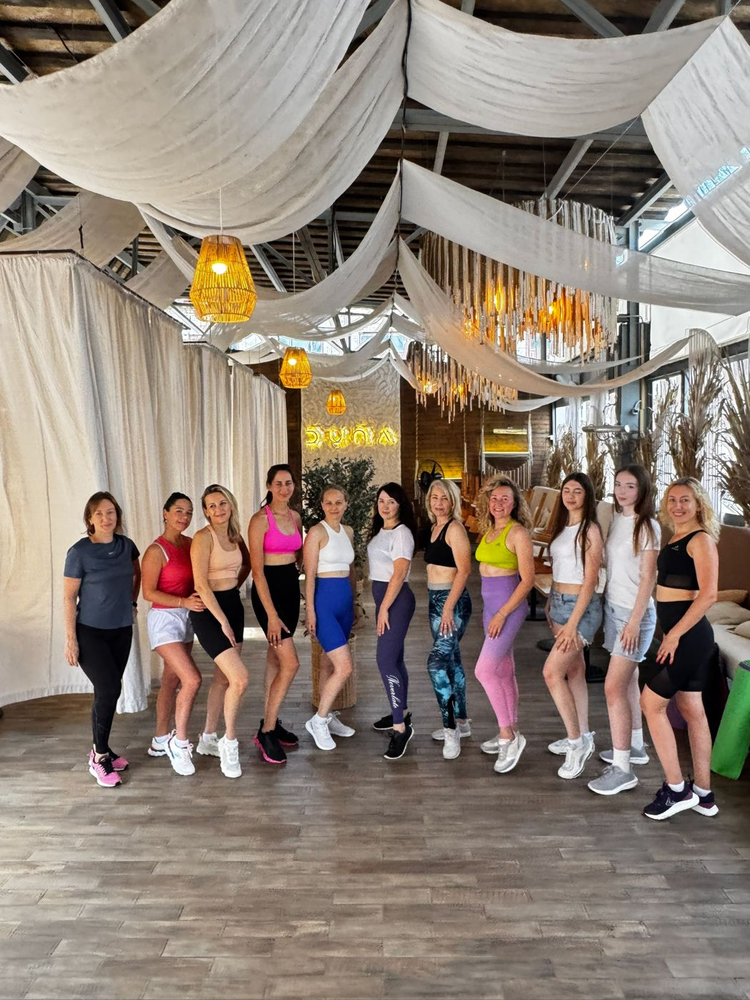

Офлайн · СаратовТренировки в клубе
Спорткомплекс F1Пн · Ср · Птв 20:00, весь год
Стадион «Сокол», 3-я ДачнаяВт · Чтв 9:00, в тёплое время года
- Зажигательные и результативные тренировки в группе
- Любой уровень подготовки — я помогу и направлю
- Совместные мероприятия, прогулки и девичники для участниц
Нужно от васСтоимость разового занятия и абонемента, адрес F1
Записаться в группу